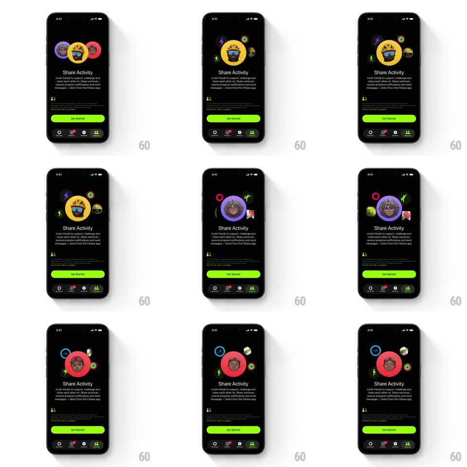

Media
Frame-by-frame

Rebuild this animation 1:1: Apple Fitness's Share Activity intro - on a black screen, a spotlight Memoji cycles through friends while small activity icons (rings, runner, medal, message) float and orbit around it, looping automatically above the "Share Activity" copy and Get Started button.

Rebuild this animation 1:1: Apple Fitness's Share Activity intro - on a black screen, a spotlight Memoji cycles through friends while small activity icons (rings, runner, medal, message) float and orbit around it, looping automatically above the "Share Activity" copy and Get Started button. ## Integration Integration: stack-agnostic spec - springs given as stiffness/damping, timed motions as duration + curve; map every value to your framework and animation library of choice. ## Scene Black screen above the Fitness tab bar: a large circular Memoji avatar center-top on a colored ring (yellow, purple, red), smaller memoji and activity icons (activity rings, runner figure, medal, medal-ribbon, message bubble) floating at various depths around it, "Share Activity" title with explainer copy, and a full-width green "Get Started" button. ## Motion spec Pattern: spotlight avatar cycle + floating icon field, looping ~9s (3s per avatar). - Cycle: the center Memoji crossfades to the next friend (scale 0.9 -> 1 with fade, 400ms), its ring color changing with it; the outgoing avatar shrinks into the floating field. - Float: each surrounding icon drifts on a slow independent path (8-16px, 3-5s periods, staggered phases) with a gentle scale breathing (0.95 -> 1.05). - Depth: icons at smaller scales sit behind the avatar, larger ones in front - they pass at different parallax speeds. - Rings: the activity-rings icon slowly rotates (12s per turn). ## Calibration - The avatar cycle is the metronome - exactly one spotlight transition every ~3s. - Icons never collide with the title text; the field lives in the upper half. ## Reduced motion Static trio of avatars; no floating or cycling. ## Don't miss - The Memoji are on saturated solid rings - yellow, purple, red - not plain circles. - The tab bar and Get Started button stay static; all motion is in the hero field.